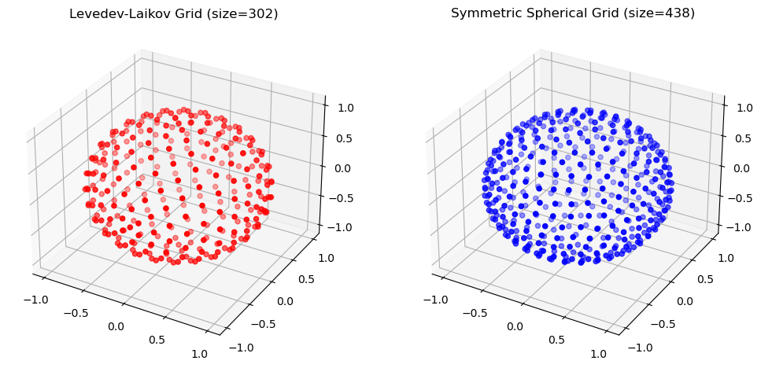

Angular Grids#
The angular grid can be used for integrating over a spherical surface. Currently, two types of angular grids are supported: Lebedev-Laikov and symmetric spherical t-design.
Initialization of Angular Grids#
Angular grids can be initialized in three ways:
By specifying the degree of the grid
By specifying the number of points in the grid
The degree specifies be the maximum angular degree \(l\) of the real spherical harmonics \(Y_{lm}\) that the grid can integrate accurately. If the given degree is no supported, the closest degree is used.
from grid.angular import AngularGrid
# Make angular give specifying the degree
degree = 28
ang_grid_ll = AngularGrid(degree=degree)
ang_grid_ss = AngularGrid(degree=degree, method="spherical")
print(f"Specified degree is {degree} but actual degree of the angular grid is:")
print(f" - {ang_grid_ll.degree} for the Levedev-Laikov grid")
print(f" - {ang_grid_ss.degree} for the symmetric spherical grid")
print("")
# Using the same degree, the Levedev-Laikov and symmetric spherical grids
# have different number of points
print(f"Number of points of the Levedev-Laikov grid: {ang_grid_ll.size}")
print(f"Number of points of the symmetric spherical grid: {ang_grid_ss.size}")
print("")
# Make angular give specifying the number of points
size = 300
ang_grid_ll = AngularGrid(degree=None, size=size)
print(f"Specified number of points (Levedev-Laikov grid) is: {size}")
print(f"Actual number of points of the angular grid {ang_grid_ll.size}")
print("")
Specified degree is 28 but actual degree of the angular grid is:
- 29 for the Levedev-Laikov grid
- 29 for the symmetric spherical grid
Number of points of the Levedev-Laikov grid: 302
Number of points of the symmetric spherical grid: 438
Specified number of points (Levedev-Laikov grid) is: 300
Actual number of points of the angular grid 302
The angular grid points are distributed across on the unit-sphere \(S^2\), i.e. points are normalized to one.
%matplotlib inline
import numpy as np
import matplotlib.pyplot as plt
# Angular grid points are on the unit sphere.
norm_ll = np.linalg.norm(ang_grid_ll.points, axis=1)
norm_ss = np.linalg.norm(ang_grid_ss.points, axis=1)
print(f"Norm of Levedev-Laikov grid points is all one: {np.all(np.abs(norm_ll - 1.0) < 1e-8)}")
print(f"Norm of symmetric spherical grid points is all one: {np.all(np.abs(norm_ss - 1.0) < 1e-8)}")
# Plot of the angular grid points of the Levedev-Laikov grid
fig = plt.figure(figsize=(12, 6))
# Customize the ticks for the x, y, and z axes for the entire figure
ax1 = fig.add_subplot(121, projection="3d")
ax1.set_title(f"Levedev-Laikov Grid (size={ang_grid_ll.size})")
x, y, z = ang_grid_ll.points.T
ax1.scatter(x, y, z, c="r", marker="o")
# Plot of the angular grid points of the symmetric spherical grid
ax2 = fig.add_subplot(122, projection="3d")
ax2.set_title(f"Symmetric Spherical Grid (size={ang_grid_ss.size})")
x, y, z = ang_grid_ss.points.T
ax2.scatter(x, y, z, c="b", marker="o")
xticks = yticks = zticks = np.arange(-1.0, 1.1, 0.5)
for ax in fig.axes:
ax.set_xticks(xticks)
ax.set_yticks(yticks)
ax.set_zticks(zticks)
plt.show()
Norm of Levedev-Laikov grid points is all one: True
Norm of symmetric spherical grid points is all one: True

Integral of Identity Function#
The integral of the identity function over the unit-sphere \(S^2\) is \(4 \pi\):
# Integrate using Levedev-Laikov grid
integrand = np.ones(ang_grid_ll.size)
integral_ll = ang_grid_ll.integrate(integrand)
# Integrate using symmetric spherical grid
integrand = np.ones(ang_grid_ss.size)
integral_ss = ang_grid_ss.integrate(integrand)
print(f"Analytical Integration (4xpi): {4 * np.pi: .9f}")
print(f"Numerical Integration (Levedev-Laikov grid) : {integral_ll: .9f}")
print(f"Numerical Integration (Symmetric Spherical grid): {integral_ss: .9f}")
Analytical Integration (4xpi): 12.566370614
Numerical Integration (Levedev-Laikov grid) : 12.566370614
Numerical Integration (Symmetric Spherical grid): 12.566370614
Integral of Spherical Harmonic Function#
The real spherical harmonic functions \(Y_{lm}\) integrates to zero unless when \(l=0, m=0\):
from grid.utils import convert_cart_to_sph, generate_real_spherical_harmonics
# Convert from cartesian to spherical (theta, phi) coordinates, Levedev-Laikov grid
_, theta_ll, phi_ll = convert_cart_to_sph(ang_grid_ll.points).T
# Convert from cartesian to spherical (theta, phi) coordinates, symmetric spherical grid
_, theta_ss, phi_ss = convert_cart_to_sph(ang_grid_ss.points).T
print("Levedev-Laikov grid:")
print(f"Minimum and Maximum of theta coordinate: {np.min(theta_ll)} and {np.max(theta_ll)}")
print(f"Minimum and Maximum of phi coordinate: {np.min(phi_ss)} and {np.max(phi_ll)}\n")
print("Symmetric spherical grid:")
print(f"Minimum and Maximum of theta coordinate: {np.min(theta_ss)} and {np.max(theta_ss)}")
print(f"Minimum and Maximum of phi coordinate: {np.min(phi_ss)} and {np.max(phi_ss)}\n")
# Generate all spherical harmonics up to order l=2
sph_harmonics_ll = generate_real_spherical_harmonics(2, theta_ll, phi_ll)
sph_harmonics_ss = generate_real_spherical_harmonics(2, theta_ss, phi_ss)
# Orders are:
orders = [[0, 0], [1, 0], [1, 1], [1, -1], [2, 0], [2, 1], [2, -1], [2, 2], [2, -2]]
# Calculate the integral of each spherical harmonic over the angular grid
results = []
for sph_harmonic_i, sph_harm in orders:
integral_ll = ang_grid_ll.integrate(sph_harmonics_ll[sph_harmonic_i])
integral_ss = ang_grid_ss.integrate(sph_harmonics_ss[sph_harmonic_i])
results.append([(sph_harmonic_i, sph_harm), integral_ll, integral_ss])
# Print the results in a table
table_width = 82
width = 25
divide = "|"
title_ll = "Levedev-Laikov grid"
title_ss = "Symmetric spherical grid"
print("Results of the integration of the spherical harmonics over the angular grid")
print("-" * table_width)
print(f"{divide:<{width}} {divide}{title_ll:>{width}} {divide} {title_ss:>{width}} {divide}")
print("-" * table_width)
for sph_harmonic_i in results:
sph_harm = f"Y_{sph_harmonic_i[0]}"
print(
f"{divide}{sph_harm:^{width}}{divide}{sph_harmonic_i[1]:>{width}.16f} {divide} {sph_harmonic_i[2]:>{width}.16f} {divide}"
)
print("-" * table_width)
Levedev-Laikov grid:
Minimum and Maximum of theta coordinate: -3.044810534956229 and 3.141592653589793
Minimum and Maximum of phi coordinate: 0.0 and 3.141592653589793
Symmetric spherical grid:
Minimum and Maximum of theta coordinate: -3.141592653589793 and 3.1265941085262927
Minimum and Maximum of phi coordinate: 0.0 and 3.141592653589793
Results of the integration of the spherical harmonics over the angular grid
----------------------------------------------------------------------------------
| | Levedev-Laikov grid | Symmetric spherical grid |
----------------------------------------------------------------------------------
| Y_(0, 0) | 3.5449077018109114 | 3.5449077018110318 |
| Y_(1, 0) | 0.0000000000000000 | -0.0000000000000001 |
| Y_(1, 1) | 0.0000000000000000 | -0.0000000000000001 |
| Y_(1, -1) | 0.0000000000000000 | -0.0000000000000001 |
| Y_(2, 0) | 0.0000000000000000 | -0.0000000000000000 |
| Y_(2, 1) | 0.0000000000000000 | -0.0000000000000000 |
| Y_(2, -1) | 0.0000000000000000 | -0.0000000000000000 |
| Y_(2, 2) | 0.0000000000000000 | -0.0000000000000000 |
| Y_(2, -2) | 0.0000000000000000 | -0.0000000000000000 |
----------------------------------------------------------------------------------
Spherical Harmonics Are Orthonormal#
The following showcases that the real spherical harmonics implemented in grid are orthonormal i.e.
# Show that real spherical harmonics are orthonormal
for i, sph_harmonic_i in enumerate(sph_harmonics_ll):
for j, sph_harmonic_j in list(enumerate(sph_harmonics_ll))[i:]:
value = ang_grid_ll.integrate(sph_harmonic_i * sph_harmonic_j)
print(f"Integral of Y{orders[i]} x Y{orders[j]} over the angular grid is: {value: .9f}")
Integral of Y[0, 0] x Y[0, 0] over the angular grid is: 1.000000000
Integral of Y[0, 0] x Y[1, 0] over the angular grid is: 0.000000000
Integral of Y[0, 0] x Y[1, 1] over the angular grid is: 0.000000000
Integral of Y[0, 0] x Y[1, -1] over the angular grid is: 0.000000000
Integral of Y[0, 0] x Y[2, 0] over the angular grid is: 0.000000000
Integral of Y[0, 0] x Y[2, 1] over the angular grid is: -0.000000000
Integral of Y[0, 0] x Y[2, -1] over the angular grid is: -0.000000000
Integral of Y[0, 0] x Y[2, 2] over the angular grid is: 0.000000000
Integral of Y[0, 0] x Y[2, -2] over the angular grid is: -0.000000000
Integral of Y[1, 0] x Y[1, 0] over the angular grid is: 1.000000000
Integral of Y[1, 0] x Y[1, 1] over the angular grid is: -0.000000000
Integral of Y[1, 0] x Y[1, -1] over the angular grid is: 0.000000000
Integral of Y[1, 0] x Y[2, 0] over the angular grid is: -0.000000000
Integral of Y[1, 0] x Y[2, 1] over the angular grid is: 0.000000000
Integral of Y[1, 0] x Y[2, -1] over the angular grid is: 0.000000000
Integral of Y[1, 0] x Y[2, 2] over the angular grid is: -0.000000000
Integral of Y[1, 0] x Y[2, -2] over the angular grid is: 0.000000000
Integral of Y[1, 1] x Y[1, 1] over the angular grid is: 1.000000000
Integral of Y[1, 1] x Y[1, -1] over the angular grid is: -0.000000000
Integral of Y[1, 1] x Y[2, 0] over the angular grid is: 0.000000000
Integral of Y[1, 1] x Y[2, 1] over the angular grid is: 0.000000000
Integral of Y[1, 1] x Y[2, -1] over the angular grid is: 0.000000000
Integral of Y[1, 1] x Y[2, 2] over the angular grid is: -0.000000000
Integral of Y[1, 1] x Y[2, -2] over the angular grid is: 0.000000000
Integral of Y[1, -1] x Y[1, -1] over the angular grid is: 1.000000000
Integral of Y[1, -1] x Y[2, 0] over the angular grid is: 0.000000000
Integral of Y[1, -1] x Y[2, 1] over the angular grid is: 0.000000000
Integral of Y[1, -1] x Y[2, -1] over the angular grid is: 0.000000000
Integral of Y[1, -1] x Y[2, 2] over the angular grid is: 0.000000000
Integral of Y[1, -1] x Y[2, -2] over the angular grid is: 0.000000000
Integral of Y[2, 0] x Y[2, 0] over the angular grid is: 1.000000000
Integral of Y[2, 0] x Y[2, 1] over the angular grid is: -0.000000000
Integral of Y[2, 0] x Y[2, -1] over the angular grid is: 0.000000000
Integral of Y[2, 0] x Y[2, 2] over the angular grid is: 0.000000000
Integral of Y[2, 0] x Y[2, -2] over the angular grid is: 0.000000000
Integral of Y[2, 1] x Y[2, 1] over the angular grid is: 1.000000000
Integral of Y[2, 1] x Y[2, -1] over the angular grid is: -0.000000000
Integral of Y[2, 1] x Y[2, 2] over the angular grid is: -0.000000000
Integral of Y[2, 1] x Y[2, -2] over the angular grid is: -0.000000000
Integral of Y[2, -1] x Y[2, -1] over the angular grid is: 1.000000000
Integral of Y[2, -1] x Y[2, 2] over the angular grid is: -0.000000000
Integral of Y[2, -1] x Y[2, -2] over the angular grid is: -0.000000000
Integral of Y[2, 2] x Y[2, 2] over the angular grid is: 1.000000000
Integral of Y[2, 2] x Y[2, -2] over the angular grid is: -0.000000000
Integral of Y[2, -2] x Y[2, -2] over the angular grid is: 1.000000000